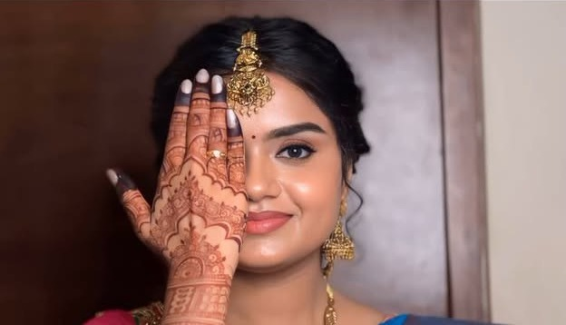
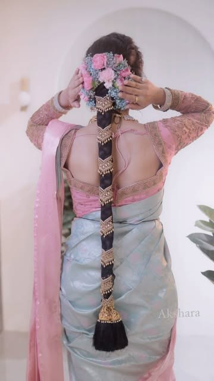
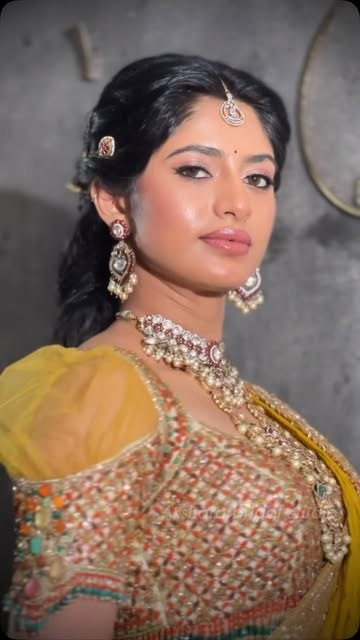

Plum saree, temple jewelleryLook 1 of 6Swipe the mirror, or tap a bulb
4.8 on Google from 532 reviews. 325K follow the studio on Instagram. A decade of expertise.
More looks, in the reels
Each one opens the reel on Instagram.
See more on Instagram
Come to the studio
AJ-52, 4th Street, A J Block, Shanthi Colony, Anna Nagar, Chennai 600040Open every day, 10 AM to 8:30 PM